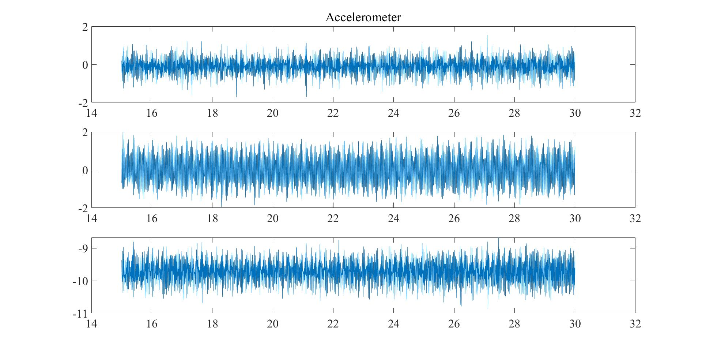
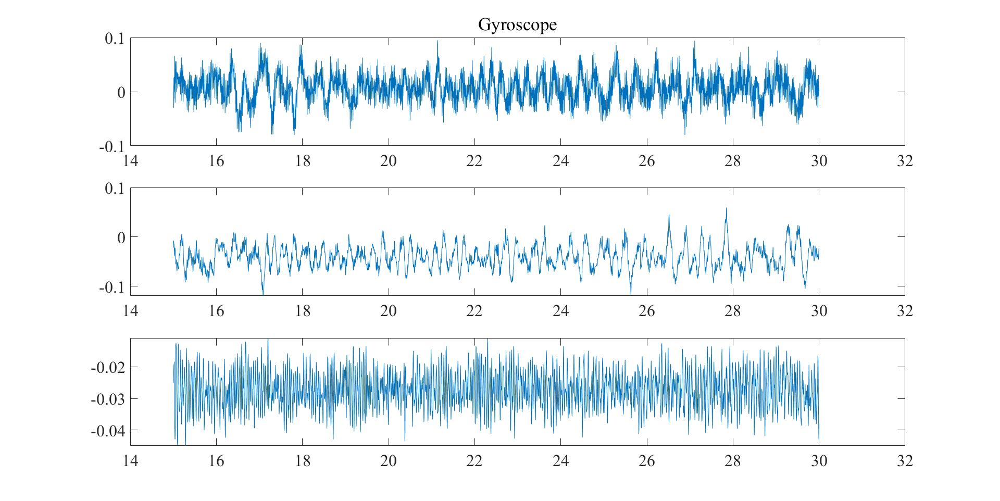
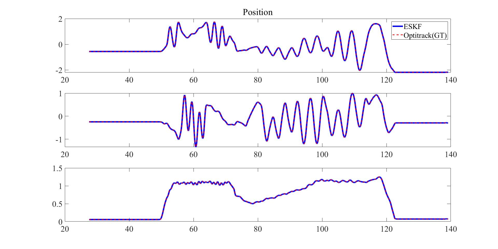
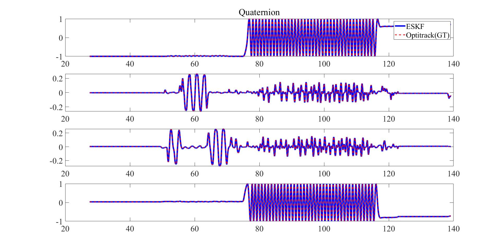

POSTECH ICT V+ 4.0 매칭 기업 ISON 2021-04-07 Navigation System Implementation using Error-State Kalman Filter_2
ISON 개발 관련 목차
- 2021-03-02 ISON Meeting
- 2021-03-24 ISON Meeting
- 2021-04-07 ISON Development: Error-State Kalman Filter_1
- 2021-04-07 ISON Development: Error-State Kalman Filter_2
본 포스팅에서는 지난 시간에 정리한 Error-State Kalman Filter의 process 및 measurement noise matrices 계수 설정, 구현 코드 관련된 내용을 작성하고자 한다.
1. Process noise & measurement noise matricies
각 states에 process 및 measurement noise들은 각각 독립적이라고 가정한다. 이 때, 논문의 정의에 따른 noise matrix를 구성하기 위해서 연구실에서 활용하는 드론의 hovering state에서 측정한 센서 정보들을 사용한다. Quadcopter의 hovering state에서 가속도계 및 자이로스코프의 measurement 정보는 다음과 같다.
  Accelerometer & Gyroscope measurements in quadcopter's hovering states
해당 데이터 정보를 기반으로 필요한 process noise covariance matrix를 구성할 수 있으며, 각각의 variance는 다음과 같이 나타난다.
| Acc measurements | Gyromeasurements | Acc bias | Gyro bias | |
| Variance | 0.3 [$m/s^2$] | 0.0005 [$rad/s$] | 0.1 [$m/s^2$] | 1 [$deg/s$] |
따라서 process noise covariance matrix는 다음과 같다. where,
모션 캡처 시스템인 Optitrack으로 부터 획득되는 measurements의 noise covariance는 다음의 calibration 정보를 기반으로 측정하였다.
이에 대한 결과는 다음과 같이 나탄나다.
| Quaternion | Position | |
| Variance | $0.0017^2$ [$rad^2/s^2$] | $0.001^2$ [$m^2$] |
위의 계수를 이용하여 ESKF 알고리즘을 구성하고 기존에 획득한 비행 정보를 이용하여 알고리즘을 테스트하였으며 결과는 다음과 같이 나타난다.
  EKSF Algorithm test results
구현 코드는 다음과 같다.
static void statePropagate(struct structOPTINS *ins, struct structOPTPAR insPar, float gyro[3], float acc[3], float dt){
const float dtHalf = dt * 0.5f;
const float dtSqHalf = dt * dt * 0.5f;
// Nominal state prediction
float rotMat[3][3];
float dOmg[3], qdOmg[4], dOmgNorm, sinOmg, tempQuat[4];
float ax = (acc[0] - ins->x[10]), ay = (acc[1] - ins->x[11]), az = (acc[2] - ins->x[12]);
float gx = (gyro[0] - ins->x[13]), gy = (gyro[1] - ins->x[14]), gz = (gyro[2] - ins->x[15]);
quat2Rot(rotMat, (float*)(&ins->x[6]));
// Position
ins->x[0] = ins->x[0] + ins->x[3]*dt + (rotMat[0][0]*ax + rotMat[0][1]*ay + rotMat[0][2]*az + ins->x[16])*dtSqHalf;
ins->x[1] = ins->x[1] + ins->x[4]*dt + (rotMat[1][0]*ax + rotMat[1][1]*ay + rotMat[1][2]*az + ins->x[17])*dtSqHalf;
ins->x[2] = ins->x[2] + ins->x[5]*dt + (rotMat[2][0]*ax + rotMat[2][1]*ay + rotMat[2][2]*az + ins->x[18])*dtSqHalf;
// Velocity
ins->x[3] = ins->x[3] + (rotMat[0][0]*ax + rotMat[0][1]*ay + rotMat[0][2]*az + ins->x[16])*dt;
ins->x[4] = ins->x[4] + (rotMat[1][0]*ax + rotMat[1][1]*ay + rotMat[1][2]*az + ins->x[17])*dt;
ins->x[5] = ins->x[5] + (rotMat[2][0]*ax + rotMat[2][1]*ay + rotMat[2][2]*az + ins->x[18])*dt;
// Quaternion
dOmg[0] = gx*dt; dOmg[1] = gy*dt; dOmg[2] = gz*dt;
dOmgNorm = vecNorm((float*)dOmg, 3); sinOmg = sin(0.5*dOmgNorm);
qdOmg[0] = cos(0.5*dOmgNorm); qdOmg[1] = (dOmg[0]/dOmgNorm)*sinOmg; qdOmg[2] = (dOmg[1]/dOmgNorm)*sinOmg; qdOmg[3] = (dOmg[2]/dOmgNorm)*sinOmg;
qMult((float*)(tempQuat), (float*)(&ins->x[6]), (float*)(qdOmg));
ins->x[6] = tempQuat[0]; ins->x[7] = tempQuat[1]; ins->x[8] = tempQuat[2]; ins->x[9] = tempQuat[3];
// Error-state prediction: Please note that, being the mean of the error initialized to zero, the error-state prediction always returns zero
// Error-state jacobian matrix
// Accelerometer skew matrix
float skewAcc[3][3] = {{0, -az, ay},
{az, 0, -ax},
{-ay, ax, 0}};
float Fx[18][18] = {0.0, }, Fi[18][12] = {0.0, }, Fit[12][18] = {0.0, };
float tempMat[3][3];
// Jacobian matrix
// Position
Fx[0][0] = 1.0; Fx[0][3] = dt;
Fx[1][1] = 1.0; Fx[1][4] = dt;
Fx[2][2] = 1.0; Fx[2][5] = dt;
// Velocity
matMult((float*)(tempMat), (float*)(rotMat), (float*)(skewAcc), 3, 3, 3);
Fx[3][3] = 1.0; Fx[3][6] = -tempMat[0][0]*dt; Fx[3][7] = -tempMat[0][1]*dt; Fx[3][8] = -tempMat[0][2]*dt; Fx[3][9] = -rotMat[0][0]*dt; Fx[3][10] = -rotMat[0][1]*dt; Fx[3][11] = -rotMat[0][2]; Fx[3][15] = dt;
Fx[4][4] = 1.0; Fx[4][6] = -tempMat[1][0]*dt; Fx[4][7] = -tempMat[1][1]*dt; Fx[4][8] = -tempMat[1][2]*dt; Fx[4][9] = -rotMat[1][0]*dt; Fx[4][10] = -rotMat[1][1]*dt; Fx[4][11] = -rotMat[1][2]; Fx[4][16] = dt;
Fx[5][5] = 1.0; Fx[5][6] = -tempMat[2][0]*dt; Fx[5][7] = -tempMat[2][1]*dt; Fx[5][8] = -tempMat[2][2]*dt; Fx[5][9] = -rotMat[2][0]*dt; Fx[5][10] = -rotMat[2][1]*dt; Fx[5][11] = -rotMat[2][2]; Fx[5][17] = dt;
// Angle error
quat2Rot(tempMat, (float*)(qdOmg));
matTransposeSelf((float*)(tempMat), 3);
Fx[6][6] = tempMat[0][0]; Fx[6][7] = tempMat[0][1]; Fx[6][8] = tempMat[0][2]; Fx[6][12] = -dt;
Fx[7][6] = tempMat[1][0]; Fx[7][7] = tempMat[1][1]; Fx[7][8] = tempMat[1][2]; Fx[7][13] = -dt;
Fx[8][6] = tempMat[2][0]; Fx[8][7] = tempMat[2][1]; Fx[8][8] = tempMat[2][2]; Fx[8][14] = -dt;
// Accelerometer bias
Fx[9][9] = 1.0;
Fx[10][10] = 1.0;
Fx[11][11] = 1.0;
// Gyroscope bias
Fx[12][12] = 1.0;
Fx[13][13] = 1.0;
Fx[14][14] = 1.0;
// Gravitational acceleration
Fx[15][15] = 1.0;
Fx[16][16] = 1.0;
Fx[17][17] = 1.0;
// Error-state input matrix (Noise jacobian matrix)
for (int i=0; i<12; i++) {
Fi[3+i][i] = 1.0;
}
// Error covariance matrix update
// P = Fx*P*Fx' + Fi*Qi*Fi'
float tempP[18][18], tempQ[18][12];
matMult((float*)(tempP), (float*)(Fx), (float*)(ins->P), 18, 18, 18);
matTransposeSelf((float*)(Fx), 18);
matMult((float*)(ins->P), (float*)(tempP), (float*)(Fx), 18, 18, 18);
matMult((float*)(tempQ), (float*)(Fi), (float*)(insPar.Qi), 18, 12, 12);
matTranspose((float*)(Fit), (float*)(Fi), 18, 12);
matMult((float*)(tempP), (float*)(tempQ), (float*)(Fit), 18, 12, 18);
matAdd((float*)(ins->P), (float*)(ins->P), (float*)(tempP), 18, 18);
// float qNorm = vecNorm((float*)(&ins->x[6]), 4);
// ins->x[6] = ins->x[6]/qNorm; ins->x[7] = ins->x[7]/qNorm; ins->x[8] = ins->x[8]/qNorm; ins->x[9] = ins->x[9]/qNorm;
}
static int optitrackUpdate(struct structOPTINS *ins, struct structOPTPAR insPar, float optiQuat[4], float optiPos[3]) {
// Measurement matrix
float H[7][18] = {0, };
float qw = ins->x[6], qx = ins->x[7], qy = ins->x[8], qz = ins->x[9];
H[0][0] = 1.0;
H[1][1] = 1.0;
H[2][2] = 1.0;
H[3][6] = -0.5*qx; H[3][7] = -0.5*qy; H[3][8] = -0.5*qz;
H[4][6] = 0.5*qw; H[4][7] = -0.5*qz; H[4][8] = 0.5*qy;
H[5][6] = 0.5*qz; H[5][7] = 0.5*qw; H[5][8] = -0.5*qx;
H[6][6] = -0.5*qy; H[6][7] = 0.5*qx; H[6][8] = 0.5*qw;
// Kalman gain update
float tempH[7][18], Ht[18][7];
float S[7][7], invS[7][7];
float K[18][7], tempK[18][7];
matMult((float*)(tempH), (float*)(H), (float*)(ins->P), 7, 18, 18);
matTranspose((float*)(Ht), (float*)(H), 7, 18);
matMult((float*)(S), (float*)(tempH), (float*)(Ht), 7, 18, 7);
matAdd((float*)(S), (float*)(S), (float*)(insPar.Ri), 7, 7);
int result = matCholInv((float*)(S), (float*)(S), 7);
matMult((float*)(tempK), (float*)(ins->P), (float*)(Ht), 18, 18, 7);
matMult((float*)(K), (float*)(tempK), (float*)(S), 18, 7, 7);
// Residual calculation
float res[7];
res[0] = optiPos[0] - ins->x[0];
res[1] = optiPos[1] - ins->x[1];
res[2] = optiPos[2] - ins->x[2];
res[3] = optiQuat[0] - ins->x[6];
res[4] = optiQuat[1] - ins->x[7];
res[5] = optiQuat[2] - ins->x[8];
res[6] = optiQuat[3] - ins->x[9];
// Error state correction
matMult((float*)(ins->dx), (float*)(K), (float*)(res), 18, 7, 1);
// Error covariance correction
float tempMat[18][18], tempP[18][18];
matMult((float*)(tempMat), (float*)(K), (float*)(H), 18, 7, 18);
// I - KH
for (int i=0; i<18; i++) {
for (int j=0; j<18; j++) {
if (i == j) {
tempMat[i][j] = 1.0 - tempMat[i][j];
}
else {
tempMat[i][j] = -tempMat[i][j];
}
}
}
// P = (I - KH)P
matMult((float*)(tempP), (float*)(tempMat), (float*)(ins->P), 18, 18, 18);
matCopy((float*)(ins->P), (float*)(tempP), 18, 18);
// Injection of the observed errors into the nominal states
// Position & Velocity
ins->x[0] = ins->x[0] + ins->dx[0]; ins->x[1] = ins->x[1] + ins->dx[1]; ins->x[2] = ins->x[2] + ins->dx[2];
ins->x[3] = ins->x[3] + ins->dx[3]; ins->x[4] = ins->x[4] + ins->dx[4]; ins->x[5] = ins->x[5] + ins->dx[5];
// Quaternion
float dqNorm = vecNorm((float*)(&ins->dx[6]), 3);
float sinNorm = sin(0.5*dqNorm);
float qdq[4] = {cos(0.5*dqNorm), (ins->dx[6]/dqNorm)*sinNorm, (ins->dx[7]/dqNorm)*sinNorm, (ins->dx[8]/dqNorm)*sinNorm};
float tempQ[4];
qMult((float*)(tempQ), (float*)(&ins->x[6]), (float*)(qdq));
ins->x[6] = tempQ[0]; ins->x[7] = tempQ[1]; ins->x[8] = tempQ[2]; ins->x[9] = tempQ[3];
// Bias & Gravitational acceleration
ins->x[10] = ins->x[10] + ins->dx[9]; ins->x[11] = ins->x[11] + ins->dx[10]; ins->x[12] = ins->x[12] + ins->dx[11];
ins->x[13] = ins->x[13] + ins->dx[12]; ins->x[14] = ins->x[14] + ins->dx[13]; ins->x[15] = ins->x[15] + ins->dx[14];
ins->x[16] = ins->x[16] + ins->dx[15]; ins->x[17] = ins->x[17] + ins->dx[16]; ins->x[18] = ins->x[18] + ins->dx[17];
// Error covariance reset
float G[18][18];
matEye((float*)(G), 18, 18);
G[6][7] = G[6][7] + 0.5*ins->dx[8]; G[6][8] = G[6][8] - 0.5*ins->dx[7];
G[7][6] = G[7][6] - 0.5*ins->dx[8]; G[7][8] = G[7][8] + 0.5*ins->dx[6];
G[8][6] = G[8][6] + 0.5*ins->dx[7]; G[8][7] = G[8][7] - 0.5*ins->dx[6];
// P = GPG'
matMult((float*)(tempMat), (float*)(G), (float*)(ins->P), 18, 18, 18);
matTransposeSelf((float*)(G), 18);
matMult((float*)(tempP), (float*)(tempMat), (float*)(G), 18, 18, 18);
matCopy((float*)(ins->P), (float*)(tempP), 18, 18);
// Make P symmetric
matTranspose((float*)(tempP), (float*)(ins->P), 18, 18);
matAdd((float*)(ins->P), (float*)(tempP), (float*)(ins->P), 18, 18);
for (int i=0; i<18; i++) {
for (int j=0; j<18; j++) {
ins->P[i][j] = 0.5 * ins->P[i][j];
}
}
// float qNorm = vecNorm((float*)(&ins->x[6]), 4);
// ins->x[6] = ins->x[6]/qNorm; ins->x[7] = ins->x[7]/qNorm; ins->x[8] = ins->x[8]/qNorm; ins->x[9] = ins->x[9]/qNorm;
return result;
}